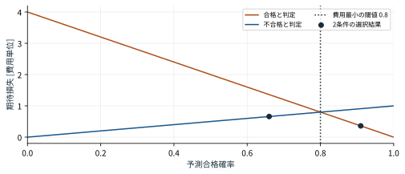

第12章 まとめと次の学習
学習目標 目的を手法と評価指標に結び付け、現場で使う実験計画を記述する。学習結果の不確実性と、追加の検証が必要な場面を説明する。
12.1 実験の後に何を決めるか
| 最終的に決めたいこと | 始め方 | 残す指標 |
|---|---|---|
| 高い平均強度を生む設定 | 単目的BO（第5〜7章） | 推薦の確認値、累計評価数、費用 |
| 強度とエネルギーの取引関係 | 多目的BO（第11章） | 非支配点、固定参照点のHV、確認値 |
| 未測定領域の実数値を予測する | 回帰のAL（第8章） | 対象分布上のRMSE、予測区間の被覆 |
| 合格確率や判定を改善する | 分類のAL（第8〜9章） | Brier損失、対数損失、判定の誤りと費用 |
| 規格を満たす範囲を知る | 境界付近と未測定域を調べ、適合範囲を推定 | 境界の誤差、誤って適合と判断した割合 |
BOでは推薦 \(\hat x\) と最適設定 \(x^\star\) の平均応答の差 \(f(x^\star)-f(\hat x)\) を、最大化における単純リグレットとして測れます。\(f\) は測定誤差を含めない目的の真の平均です。真の最大値を指定できる合成試験では直接計算しやすい一方、実験では最大値が未知なので、独立した確認測定を使って現行条件や基準手法と比較します。ALでは、ラベルを集めたい領域と、予測の性能を評価したい領域を明記します。必要に応じて運用時と同じ入力分布、または意味が明確な重みを設定します (Frazier 2018年; Garnett 2023年; Settles 2009年)。
12.2 実行する 判定と費用を結び付ける
第9章の合格判定を振り返ります。実務で誤って合格品とする費用を4、合格品を誤って不合格とする費用を1とします。いずれも同じ任意の費用単位で、正しく判定したときの費用は0です。二つの試験条件の予測合格確率を0.66と0.91とし、確率をもとに判定ごとの期待損失を計算します。
import torch
p = torch.tensor([0.66, 0.91], dtype=torch.float64)
loss_if_accept = 4 * (1 - p)
loss_if_reject = p
threshold = 4 / (4 + 1)
accept = loss_if_accept <= loss_if_reject
best_loss = torch.where(accept, loss_if_accept, loss_if_reject)費用から決めた閾値は 0.8 です。0.66の条件は不合格、0.91の条件は合格と判定します。二条件の等重み平均の期待損失は、閾値0.5の判定で 0.86、費用に基づく閾値では 0.51 です。

期待損失の計算には予測確率を使うので、確率の較正や、費用の設定が意思決定に影響します。例えば費用を見直せば同じGPでも閾値は変わります。試験を追加してデータを得る行動は、合否を判定する行動とは費用も評価する結果も異なります。第12章のNotebookでは、閾値と費用だけを変える影響を再現できます。
12.3 実験計画のチェックリスト
| 試験前に決める項目 | 記録する内容 |
|---|---|
| 目標 | 推薦、範囲推定、予測、判定のどれを最終出力にするか |
| 操作・観測 | 入力の範囲、型、単位、変更できない状況、測定内容 |
| 適合性 | 実行前に分かる制約、測って分かる制約、各試験で守る安全条件 |
| データ | 測定装置と手順、時刻、ロット、欠測・打ち切り・失敗の理由 |
| 初期設計 | 既存データを使う根拠、候補の初期点、必要な反復測定 |
| 比較 | ランダムなどの基準、共通の初期条件、費用と時間の数え方 |
| 停止と確認 | 予算上限、停止時の推薦規則、確認枠、採用に必要な改善幅 |
| 再現 | ソフトウェアの版、seed、データ版、候補と結果を結ぶID |
たとえば、上限 20回 に対し、初期試験を6回、確認を4回とすると、適応的に選ぶ試験は最大 10回 です。試料を消費した失敗も、この枠を1回使います。
並行作業では、提案済みで結果待ちの点を時間の記録に残し、計測完了の順序も保存します。測定が失敗しても試料を消費したなら、その費用を数えます。計算時間、試験回数、経過時間は用途が違うので分けて報告します。基準手法と比較するときは、目的値の範囲だけでなく初期観測、停止規則、確認予算を揃えます。
12.4 失敗から原因を絞る
- 不確かさの大きい条件ばかり測っている。 第4・5章のように予測平均と獲得値を照合し、次の測定が目的に合うかを調べます。
- 最良観測値を再現できない。 第7章のように最良値と推薦を区別し、第10章のように別の試料で推薦を確認します。
- 取得済み点で誤りが少ない。 第8章に沿って、運用時を想定した独立のデータで評価します。
- 候補を再現できない。 第6・10章の記録を使い、試験番号・条件・時刻を照合します。失敗や結果待ちも記録します。
12.5 研究課題と読み進め方
運用時の入力分布が変わると、学習した確率の較正や、追加ラベルの価値が変わり得ます。どのデータを追加取得し、どの分布で評価するかを合わせて検討します (Settles 2009年; Bickford Smith ほか 2023年)。
並行・非同期試験では、所要時間や失敗が条件によって異なる場合の予算配分が課題です。過去の観測を使う場合は、応答の構造や因果関係を新しい材料とどこまで共有できるかを確かめます (Garnett 2023年; Feurer ほか 2018年; Aglietti ほか 2020年)。
| 次に深めるテーマ | 読む資料 | 関連するrobotorchanの実行例 |
|---|---|---|
| GP回帰・分類の推論 | (Rasmussen と Williams 2006年, 第2・3章) | 第4章・第9章のNotebook |
| 獲得関数と逐次最適化 | (Frazier 2018年; Garnett 2023年) | 第5〜7章のNotebook |
| 予測改善と観測選択 | (Settles 2009年; Bickford Smith ほか 2023年) | 回帰の能動学習のNotebook |
| 操作・状況・介入 | (Krause と Ong 2011年; Aglietti ほか 2020年) | Contextual BOのNotebook、Causal BOのNotebook |
12.6 章末演習とまとめ
- 確認。 上限20回、初期6回、現行条件と推薦条件の確認を各2回とすると、候補に何回使えますか。その途中で試料を使った失敗が1回ありました。候補予算を使い切った場合、成功して得た追加観測は最大何件ですか。
- 操作。 Notebookで誤って合格とする費用を2に変え、閾値と二つの確率での判定を求めてください。
- 発展。 「原料ロットが変わっても強度の合格確率を予測したい」という課題を選び、表の項目を1ページにまとめてください。どのロットを候補選択に使い、どのロットを評価に残しますか。
実験の目的、観測できるデータ、次の候補の価値を順に定義できれば、モデルや最適化器を変えても説明の軸が保てます。まず小さな題材で一巡させ、試験の予算をどこに使い、最終判断にどの観測が効いたのかを振り返ってください。